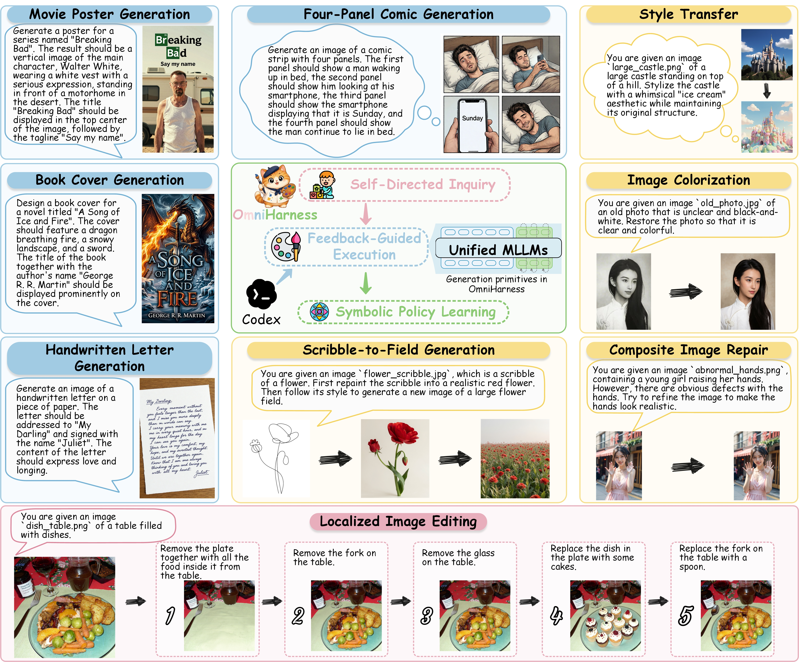
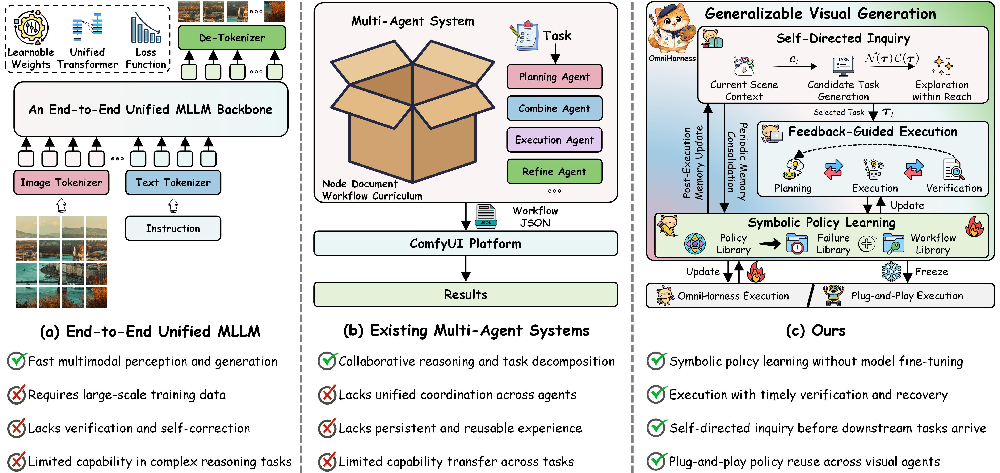
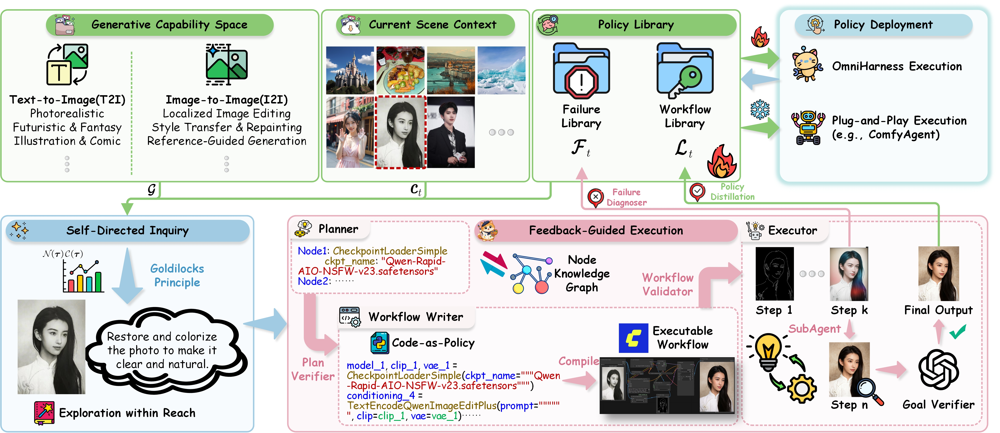
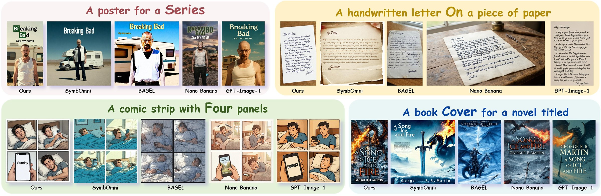
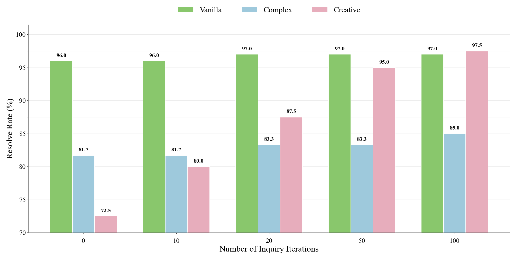

OmniHarness: Harnessing Generalizable Visual Generation via
Symbolic Policy Learning
OmniHarness learns symbolic policies for visual generation task families. The harness
adapts them with intermediate verification and localized recovery. Self-directed inquiry
supplies experience before downstream tasks arrive.
The harness coordinates reasoning, execution, memory, and feedback. Symbolic policies
encode shared procedures and applicability conditions for task families, with
instance-specific inputs removed. Execution feedback refines the policy library while
model parameters remain fixed.

Self-directed inquiry and feedback-guided execution support symbolic policy learning for
generalizable visual generation.
Generalizable visual generation
Adapt procedures to each task.
Unified models support direct generation, and multi-agent systems add planning and
collaboration. OmniHarness instantiates, adapts, and composes symbolic policies for new
tasks and learns from execution feedback.

OmniHarness combines self-directed inquiry and feedback-guided execution to learn
symbolic policies for visual generation task families.
The implementation uses a Codex reasoning backend and ComfyUI execution. Plans, workflow
templates, intermediate artifacts, and feedback guide task-specific generation and local
repair.

The Policy Library comprises a Workflow Library and a Failure Library. Online execution
refines policies, while frozen snapshots support reuse without library updates.
01
∞
Symbolic Policy Learning
Abstract verified executions into policies for task families. Retain shared procedures
and applicability conditions, remove instance-specific inputs, and refine policies
through execution feedback.
verified execution → reusable policy02
⌘
Feedback-Guided Execution
Instantiate, adapt, and compose policies for each task. Intermediate verification
guides workflow refinement and localized recovery while preserving verified steps.
plan → execute → verify → recover03
✦
Self-Directed Inquiry
Generate practice tasks before downstream objectives are specified. Exploration within
Reach balances capability novelty and estimated learnability to probe capability
limits.
arg max 𝒩(τ) · 𝒞(τ)
Self-directed inquiry is motivated by Chinese philosopher Wang Yangming's interpretation
of the investigation of things and the extension of knowledge. The Workflow
Library stores reusable policy templates; the Failure Library stores failure evidence and
corrective strategies. Task inputs are bound before execution. Exporting the inquiry state
produces a frozen policy snapshot for reuse. Controlled evaluations start inquiry from an
empty library.
03
Results
Paper-reported results
Six visual generation benchmarks.
The values below are reported in the paper across workflow construction, compositional
generation, knowledge-grounded synthesis, and reasoning-guided editing.
ComfyBenchWorkflow construction
92.5%
Total Resolve with a 100.0% Pass rate.
GenEvalComposition
0.997
Overall compositional generation score.
GenEval2Fine-grained relations
94.0
Attribute and Count scores.
WISEWorld knowledge
0.86
Overall WiScore.
Reason-EditImage editing
24.554
CLIP score on Understanding scenarios.
KRIS-BenchKnowledge intensive
77.33
Overall score across generation and editing.
Paper examples
Diverse visual tasks.

Creative workflow examples across posters, letters, comics, and book covers.
Paper-reported ablations
Practice and downstream updates.
Removing self-directed inquiry reduces Total Resolve from 92.5% to 87.0%. Disabling
online policy updates reduces it to 88.5%, while task-specific adaptation remains
active.
+22.5 Creative points with inquiry43 workflow policies after 50 inquiry iterations

Reported Resolve rates over different inquiry budgets.
Citation
OmniHarness.
Anonymous citation metadata.
BibTeX
@misc{omniharness2026,
title = {OmniHarness: Harnessing Generalizable Visual Generation
via Symbolic Policy Learning},
author = {Anonymous Authors},
year = {2026}
}